За одиннадцать лет существования клуба изменились правила, фазы игры, персонажи и методика ведения. Постепенно всё это приобрело всё более выраженный авторский стиль.
Ниже вы найдёте полную инструкцию: как организовать игру, каких персонажей включить и сколько времени она займёт. Также я расскажу об ошибках ведущего и о том, как поддерживать динамику игры.
Кратко
- Цель
- Мафия стремится устранить всех мирных жителей, а мирные — выяснить, кто входит в Мафию, и устранить её участников голосованием. Игра продолжается, пока одна из сторон не будет полностью устранена: ничьей не бывает.
- Команды
- Роли раздаются тайно, в конвертах. Среди ролей всегда есть Мафия и мирные жители.
- Количество игроков и персонажи
- Оптимальный состав — десять человек: 3 мафиози, Доктор, Шериф, Адвокат и 4 обычных мирных жителя.
- Фазы
- День — представление участников, круг подозрений, свободное обсуждение и голосование. Ночь — ведущий будит Мафию, Доктора, Шерифа и Адвоката.
- Длительность
- ~40 мин.
Принцип игры
В начале сессии каждый участник тайно получает карточку со своей ролью — например, в конверте. Среди ролей всегда есть Мафия (отрицательные персонажи) и мирные жители (положительные персонажи).
Если вы оказались на стороне Мафии, ваша цель — устранить всех мирных жителей и сделать это так, чтобы никто вас не заподозрил. Если вы мирный житель, ваша задача — выяснить, кто входит в Мафию, и устранить мафиози общим голосованием.
Игра продолжается, пока одна из сторон не будет полностью устранена. Ничьей не бывает.
Базовые персонажи в авторской версии
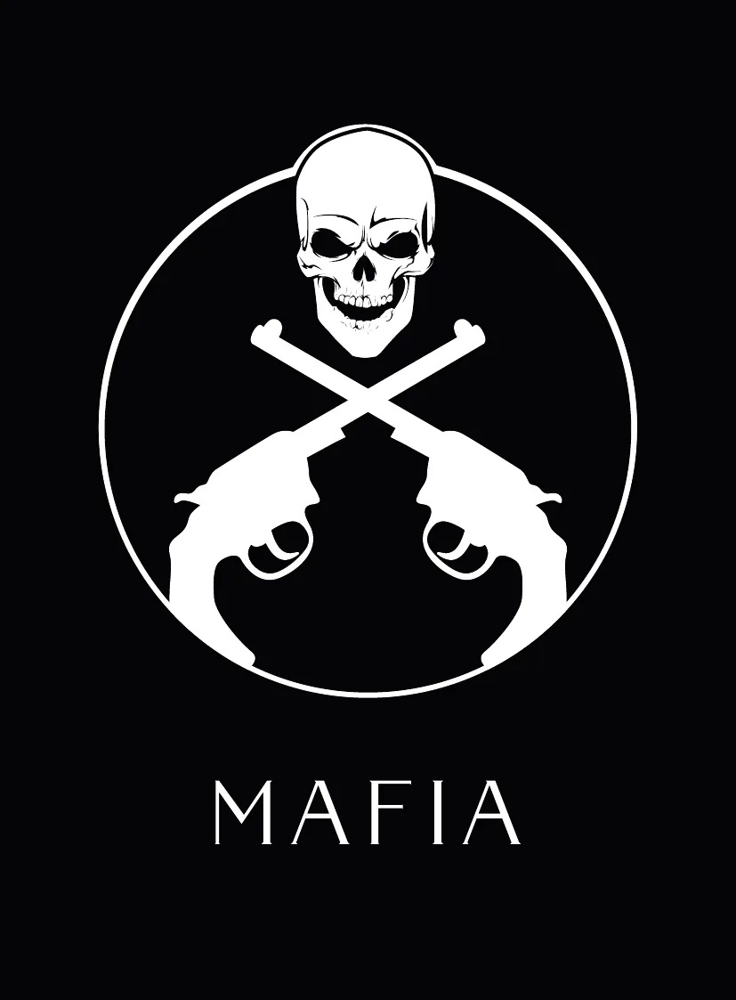
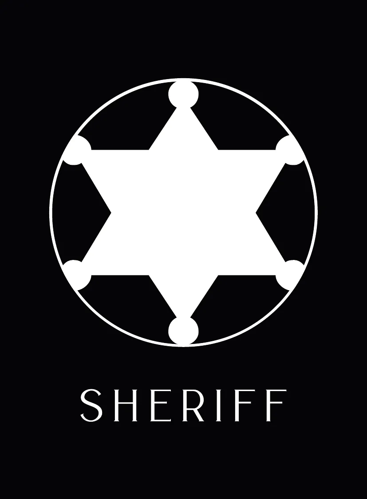
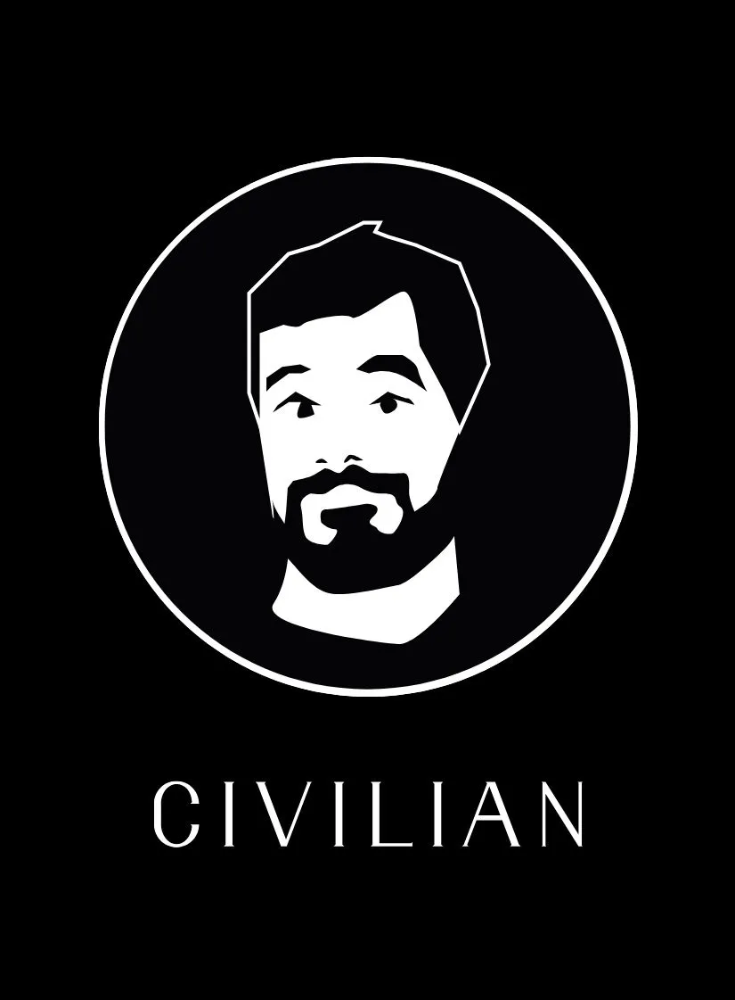
Мафия. Ночью мафиози просыпаются и вместе решают, кого устранить, — чаще всего договариваясь взглядами или жестами пальцев. В отличие от традиционных правил, где есть главный мафиози — Дон, в нашей версии все члены Мафии равноправны.
Доктор. Ночью Доктор просыпается и пытается угадать, в кого могла целиться Мафия. Если он указывает на того же игрока, все остаются живы. Доктор может лечить самого себя, но не может лечить одного и того же человека две ночи подряд.
Шериф. Ночью Шериф просыпается и проверяет одного игрока. Ведущий показывает ему только статус: мирный житель или Мафия. Конкретную роль мирного жителя ведущий не называет и не показывает.
Мирные жители. Ночью они спят. Их главный инструмент — дневное голосование.
Персонажи нашего клуба
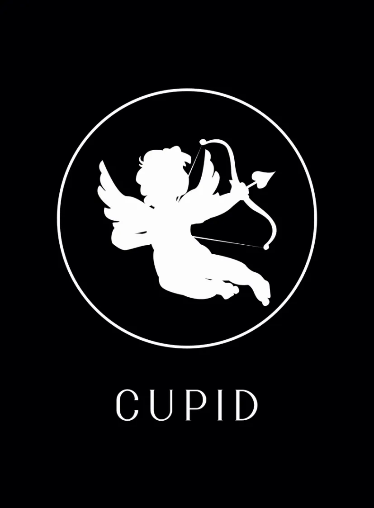
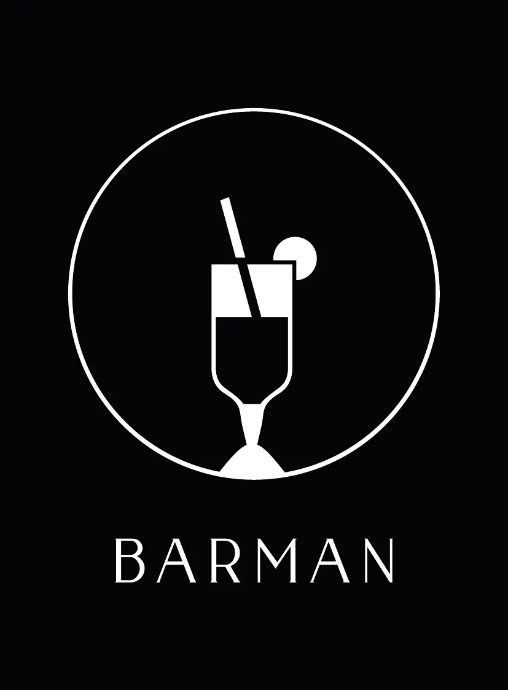
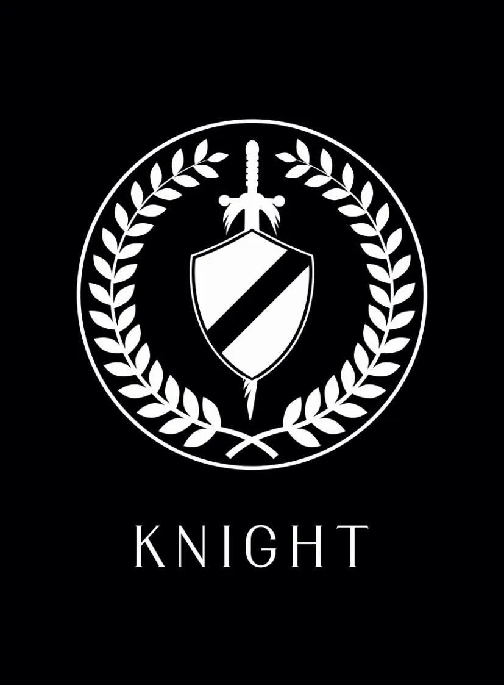
Адвокат. Ночью у Адвоката нет особой функции. Но днём, во время голосования, если два или более игроков набирают одинаковое количество голосов, именно Адвокат решает, кого из них защитить, а кого устранить.
Купидон. Ещё до начала первого раунда Купидон выбирает двух влюблённых. Он может выбрать и самого себя. Влюблённые узнают друг друга, но не раскрывают друг другу свои роли.
Если одного из них устраняют, то, согласно игровой легенде, сердце второго не выдерживает — и он уходит вслед за первым. Так можно сразу потерять двух мирных жителей.
Если же Купидон случайно выбирает одним из влюблённых члена Мафии, ситуация становится совсем иной. Второй влюблённый, даже не зная, что его партнёр — мафиози, будет пытаться его защищать. А если всё-таки узнает правду, ему придётся выбирать: пожертвовать собой или найти более экологичное решение.
В такой ситуации привычная логика перестаёт работать. На первый план выходят человеческий фактор и эмоции, которыми, скорее всего, и будет продиктовано решение. Это открывает новые сценарии развития игры.
Бармен. Один раз за игру, ночью, Бармен может «подпоить» одного игрока. Согласно игровой легенде, тот после этого раскрывает свою настоящую роль.
Поэтому Бармену стоит выбрать целью либо Шерифа, чтобы впоследствии действовать вместе с ним, либо мафиози, чтобы как можно раньше вывести его на чистую воду.
Рыцарь. Один раз за игру, если ночью Мафия выбирает Рыцаря своей целью, его доспехи защищают его от устранения. Если Мафия нацелится на него во второй раз, теоретически Рыцарь уже должен выбыть из игры.
Однако если во вторую ночь Доктор вылечит Рыцаря, это может серьёзно нарушить планы Мафии.
Ванга. Её функцию я меняю в зависимости от ситуации. Один из вариантов — ночью она выбирает игрока, голос которого не будет учитываться при дневном голосовании.
Этого персонажа стоит добавлять в игру с более опытными участниками. В противном случае, особенно в компании новичков, Ванга, хотя сама и принадлежит к мирным, может совершенно случайно сыграть против своей команды.
Фазы игры
День
- Раздаём роли.
- Представляемся по очереди. Каждый рассказывает вымышленную историю о себе, не раскрывая свою настоящую роль, и одновременно прислушивается к собственным ощущениям.
- Круг подозрений. По очереди рассказываем, кто вызывает у нас подозрение, а кому мы доверяем.
- Свободное обсуждение без очереди. Время решить, в кого стрелять.
- Голосование. Все одновременно поднимают револьвер вверх — дома вместо него можно просто поднять руку. Когда ведущий досчитает до трёх, игроки опускают руку или револьвер и направляют его на того, кого хотят устранить.
- Игрок, набравший больше всего голосов, выбывает. Если это был мирный житель, ему можно дать последнее слово. Если это был мафиози, мы провожаем его из-за стола и начинаем ночную фазу.
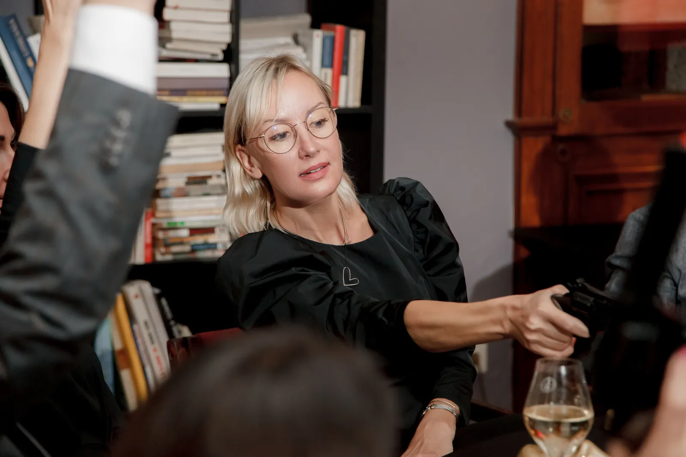
Ночь
- Все надевают маски, а мы делаем музыку громче.
- Будим Мафию, помогаем её участникам увидеть друг друга и спрашиваем, кого они хотят устранить.
- Будим Доктора и спрашиваем, кого он хочет вылечить и в кого, по его мнению, могла целиться Мафия.
- Будим Шерифа и спрашиваем, кого он хочет проверить и кто кажется ему подозрительным.
- Будим Адвоката, чтобы он познакомился с ведущим и понял свою роль.
- Будим город и объявляем, что маски можно снять.
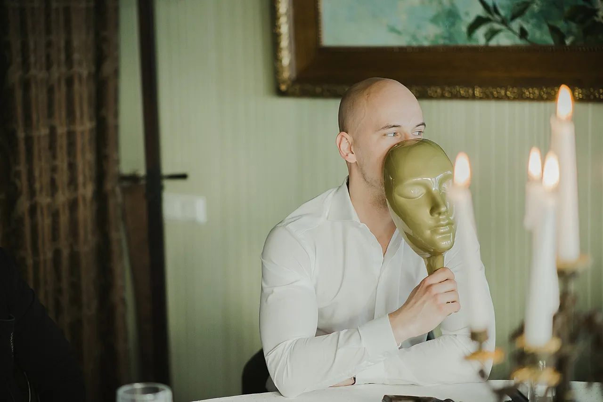
Сколько игроков и как распределить роли
С точки зрения динамики игры оптимальное количество участников — десять. Для меньшей группы важно учитывать описанные ниже особенности, а в большой компании есть риск, что игра просто наскучит участникам.
10 игроков: 3 мафиози, 1 Доктор, 1 Шериф, 1 Адвокат и 4 обычных мирных жителя. Если Мафия побеждает слишком легко, можно добавить Рыцаря. Если времени мало, но хочется успеть сыграть ещё одну сессию, можно добавить Купидона.
9 игроков: Возможны три варианта:
- 2 мафиози, Доктор, Шериф, Адвокат и 4 обычных мирных жителя — если игроки опытные;
- 3 мафиози, Доктор, Шериф, Адвокат и 3 обычных мирных жителя — если хочется более динамичной игры;
- 3 мафиози, Доктор, Шериф, Адвокат, Бармен и 2 обычных мирных жителя.
Если играете девятером с тремя мафиози, важно подбодрить участников действовать решительно и не оставаться слишком долго в тени. Нужно играть смело, даже рискуя быть устранённым Мафией. Иначе Мафия быстро получит преимущество.
7–8 игроков: 2 мафиози, 1 Доктор, 1 Адвокат и 3–4 мирных жителя. Если группа неопытная, стоит добавить и Шерифа. Для опытных игроков его лучше не включать.
При таком составе Адвокат особенно важен и может спасти игру, когда остаются один мирный житель и один мафиози.
6 игроков: Обычно я не провожу игры с шестью участниками. Но если возникла такая ситуация, рекомендую следующий состав: 1 мафиози, 1 Доктор, 1 Купидон и 3 мирных жителя. Шериф дал бы мирным слишком большое преимущество, а Купидон в таком составе, хотя и играет на стороне мирных, скорее помог бы Мафии.
| Игроков | Мафия | Доктор | Шериф | Адвокат | Особые роли | Мирные жители |
|---|---|---|---|---|---|---|
| 10 | 3 | 1 | 1 | 1 | — | 4 |
| 9 | 2–3 | 1 | 1 | 1 | Бармен, если 3 мафиози | 2–4 |
| 7–8 | 2 | 1 | для неопытных игроков | 1 | — | 2–4 |
| 6 | 1 | 1 | — | — | Купидон | 3 |
Длительность игровых сессий
Игра непредсказуема: например, если Доктору повезёт, сессия может продлиться на три–семь минут дольше. Однако статистически чаще всего можно рассчитывать примерно на такую продолжительность:
| Игроков | Длительность |
|---|---|
| 10 | около 40 минут |
| 8–9 | 30–35 минут |
| 7 | 15–25 минут |
| 6 | 5–20 минут |
На объяснение правил стоит отвести двадцать минут.
Игровой реквизит
Для домашней игры достаточно обычной колоды карт — ночью можно закрывать лицо руками, — а также ручки и листа бумаги для ведущего.
Если же хочется создать более эстетичную атмосферу, стоит подготовить десять масок, десять металлических револьверов, чтобы ощущался их вес, десять конвертов, десять карточек с персонажами, свечи в подсвечниках, скатерть, круглый стол и стулья.
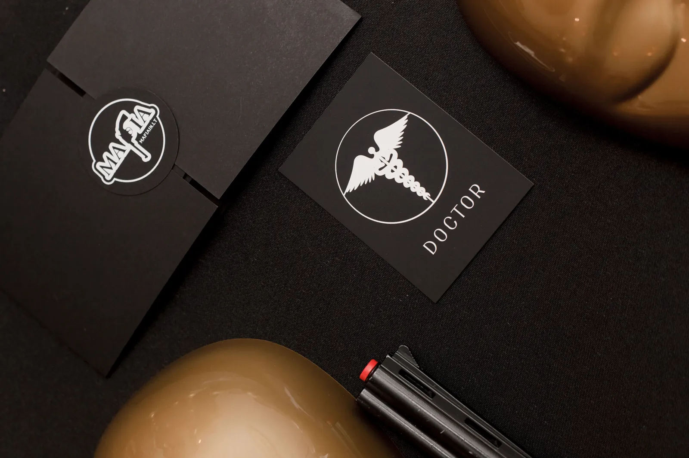
Ведущему также понадобятся ручка, твёрдая подложка и шаблон с полями «кто входит в Мафию», «кто Шериф», «кто Доктор», «кто Адвокат», а также «в кого стреляет Мафия» и «кого лечит Доктор». Нужен и отдельный лист бумаги, которым днём можно накрывать шаблон, чтобы участники случайно не увидели секретную информацию.
А если гостей больше десяти?
Всё зависит от формата вечера. Если хочется уюта и тёплой атмосферы, достаточно одного стола и одного ведущего — играть могут от 8 до 30 участников. Если это корпоративный вечер с более чем 30 участниками, понадобятся два стола и два ведущих.
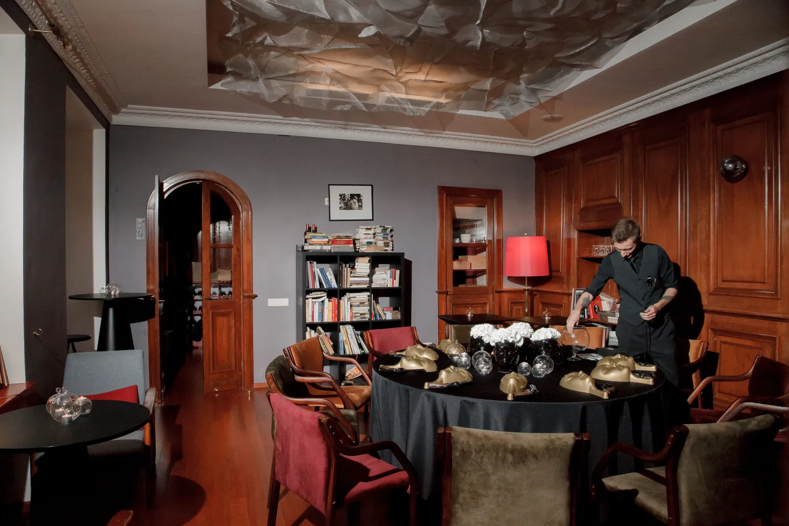
Оптимально провести за вечер три сессии, по десять игроков в каждой. Если гостей всего десять, каждый сыграет три раза, а если тридцать — по одному разу.
Во время первой партии остальные гости наблюдают за игрой со стороны. Судя по отзывам участников, им это тоже обычно нравится. Во второй партии к игре присоединяются те, кто ещё не играл, а также те, кто выбыл первым. Состав третьей партии можно определить в зависимости от ситуации и желания участников.
Несколько советов тем, кто играет впервые
Не пытайтесь понять всё сразу. Расслабьтесь — пусть «напрягается» ведущий.
Вас могут устранить как за активность, так и за пассивность. Это всего лишь игра: найдите свой стиль и не бойтесь экспериментировать.
Не сдавайтесь ни на секунду. Десятки раз я видел, как большинство подозревало одного человека, но в итоге голосовало против другого.
Помните, что игра должна объединять. Уважайте других участников и никогда не переходите на личности — в такой тактике нет никакого достоинства.
Если вы перестали понимать, что происходит, и растерялись, прислушайтесь к своим ощущениям, особенно к сигналам тела. Тело никогда не лжёт. Если вам становится не по себе, когда говорит один из участников, возможно, так ваше тело реагирует на ложь или манипуляцию.
Ошибки ведущего
Излишняя категоричность
Как это выглядит: Ведущий строго придерживается установленных правил и наказывает игроков за непреднамеренные нарушения.
К чему это приводит: Гости начинают нервничать, бояться ошибиться, а эмоциональная связь между участниками может даже нарушиться.
Как лучше: Важно помнить, что цель игры — хорошо провести время вместе, повеселиться, обменяться энергией и, возможно, немного лучше узнать себя и других участников. Поэтому ведущему необходимо проявлять гибкость.
Решения следует принимать с учётом конкретной ситуации: подготовки участников, их возраста, вовлечённости и даже повода для встречи. Если это корпоративное мероприятие на шестьдесят человек, важно поддерживать динамику с помощью мягкой дисциплины. Если же это частная встреча пятнадцати близких друзей, важнее создать уютную атмосферу и приятно провести время.
Строгое следование правилам в любой ситуации редко бывает оправданным. В нашем формате ведущий должен выступать координатором — помогать участникам ориентироваться в игре, — а не становиться её главным действующим лицом.
Направление голоса в ночной фазе
Как это выглядит: Ведущий заранее знает, с какой стороны стола сидят Мафия или Доктор, и обращается именно в ту сторону.
К чему это приводит: Участники могут догадаться, с какой стороны находится тот или иной персонаж.
Как лучше: Говорить, глядя в потолок.
Нюанс: некоторые игроки могут использовать этот аргумент как игровую тактику, даже если ведущий всё делает правильно. В таком случае важно не принимать это на свой счёт и сохранять нейтралитет: это часть игры, в которой ведущего используют как инструмент манипуляции.
Избыточная информация
Как это выглядит: Ведущий сообщает, что Мафия стреляла в игрока по имени Йонас, хотя Доктор спас его и никто не погиб.
К чему это приводит: Игроки, способные критически мыслить, могут сделать вывод, что Йонас — мирный житель. Таким образом, все, кто играет против Мафии, получают преимущество.
Как лучше: Сказать, что этой ночью произошла перестрелка, но никто не пострадал. Дальше игроки, опираясь на логику игры и известные им роли, могут сами предположить: либо Доктор спас цель Мафии, либо Мафия стреляла в Рыцаря.
Преждевременное завершение игры
Как это выглядит: Ведущий завершает игру, когда количество мирных жителей и мафиози становится одинаковым.
К чему это приводит: Игроки лишаются части эмоций и неожиданных поворотов, ради которых и играют.
Как лучше: Оставлять место человеческому фактору: из-за волнения или желания создать интригу Мафия может устранить одного из своих. Важно помнить, какие роли мирных жителей ещё остаются в игре: Адвокат или Доктор могут существенно изменить её ход.
Иными словами, не стоит полагаться только на математику и логику. Всегда нужно оставлять игрокам возможность действовать по-своему: их решения не обязательно должны быть логичными. Скорее, всё может быть наоборот.
Чрезмерная вовлечённость или излишняя отстранённость
Как это выглядит: Ведущий пытается добиться от игры желаемого качества, хотя участники играют впервые. Или, наоборот, держится в стороне и совсем не вмешивается, даже когда игроки теряются.
К чему это приводит: Участники могут начать переживать, что играют недостаточно хорошо, или потерять ощущение уюта и непринуждённости.
Как лучше: Позволять гостям играть так, как у них получается, особенно в первый раз. Если нужно, можно мягко направлять их с помощью вопросов или напоминать, на что стоит обратить внимание в конкретной фазе игры.
Слишком подробно объяснять правила до начала игры
Как это выглядит: Ведущий пытается объяснить каждый возможный нюанс и все варианты развития событий.
К чему это приводит: Участники перегружаются информацией и устают, пытаясь всё запомнить.
Как лучше: Заранее объяснить гостям, что им не нужно запоминать всё сразу и что при необходимости вы повторите нужные правила в соответствующий момент игры. В начале достаточно рассказать основную концепцию и последовательность событий, не углубляясь в детали.
Выбывшие игроки остаются за столом
Как это выглядит: Ведущий не провожает выбывших игроков от стола.
К чему это приводит: Оставшиеся игроки могут растеряться, а выбывшим трудно сохранять молчание и не вмешиваться в игру.
Как лучше: Если выбывший игрок был мирным жителем, дать ему возможность сказать последнее слово, поблагодарить его за игру и проводить от стола.
Тишина
Как это выглядит: За столом воцарилась тишина: кто-то волнуется из-за выпавшей ему роли Мафии, кто-то не знает, что сказать, а кто-то стесняется.
К чему это приводит: По сути, ни к чему плохому. Иногда даже полезно позволить участникам побыть в тишине: так им легче сосредоточиться на своих внутренних ощущениях. Однако важно отличать осознанную тишину от неловкости, возникающей из-за того, что человек не знает, что делать или говорить.
Как лучше: Не пытаться интерпретировать происходящее. Любую паузу можно использовать с пользой: например, предложить участникам обратить внимание на физические ощущения и подумать, что они могут означать. Или как бы между прочим спросить, кого игроки собираются устранить к концу раунда.
Часто задаваемые вопросы
Что делать, если во время дневного голосования два или более игроков набрали одинаковое количество голосов, а Адвокат уже выбыл?
Нужно провести повторное голосование, но на этот раз можно выбирать только из игроков, набравших одинаковое количество голосов. Если и во второй раз голоса разделятся поровну, никто не выбывает, и игра переходит в ночную фазу.
Можно ли раскрывать свою роль во время игры?
Это зависит от ситуации. Для опытных игроков возможность раскрыть свою роль может добавить игре эмоциональной динамики. Если играете с новичками, рекомендую не разрешать раскрывать свою роль до тех пор, пока игрок не выбывает.
Зачем давать мирному жителю последнее слово?
Чтобы он мог выразить свои эмоции и поделиться полезной информацией — например, рассказать, кого он лечил, кого проверял и какую роль играл.
С какого возраста можно играть?
Это зависит от самого человека. Я начал играть в двенадцать лет.
Где играть, если я один?
Сейчас я не организую открытые очные игры. Но если вы хотите поиграть, напишите мне в Telegram — и я организую для вас игру на нашей онлайн платформе.
Как начать играть интуитивно?
Отбросьте привычную логику и обратите внимание на свой пульс, руки, давление, ощущения в области сердца и живота, кончики пальцев. Тело само подскажет, когда вам спокойно и комфортно, а когда вы испытываете дискомфорт. Обращайте внимание на то, кто говорит в этот момент. Не так важно, что говорят люди, — важнее то, что чувствуете вы сами.
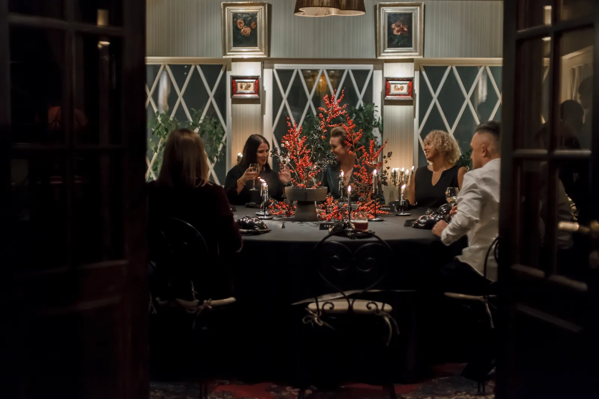
Если вам близок описанный выше стиль игры и хочется провести уютный вечер в кругу друзей, напишите мне лично.
Если вы планируете корпоративный вечер и вам нужна организация мероприятия под ключ, приглашаю вас на страницу Услуги. Там вы сможете выбрать необходимые услуги и узнать точную стоимость мероприятия.
А если вы организуете игру самостоятельно по приведённой выше инструкции, желаю вам удачи и приятного вечера.
Создайте своё мероприятие
Выберите количество столов, дату мероприятия и необходимые услуги
Отправить запрос